Fotograaf in Zwolle en omgeving
Precies zoals jullie het beleefden.
Een bruiloft, een gezin of een portret van je kind: ik leg vast wie jullie zijn, licht, fris en puur. En je krijgt het ook echt in handen.
4.9 uit 130 Google-reviews
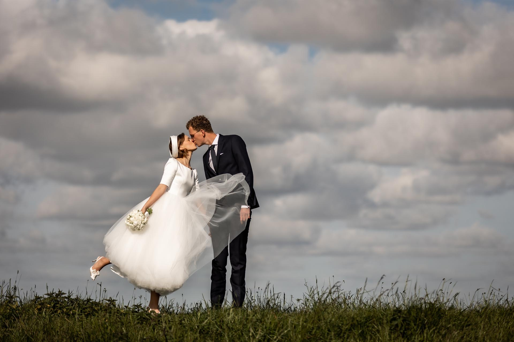
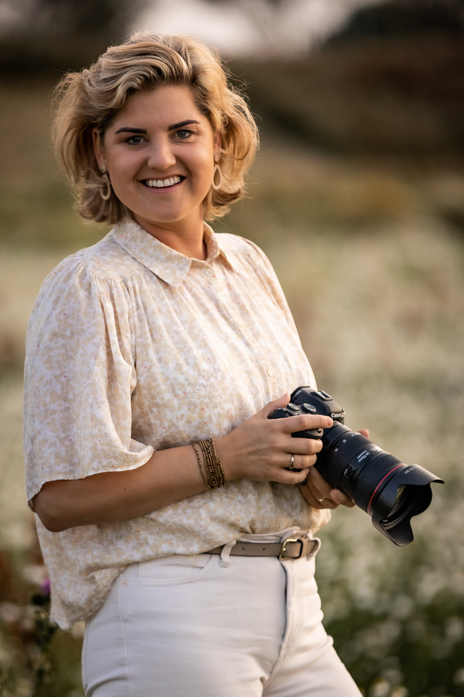
Over Hanneke
“De wereld is zo mooi! Met verhalen van liefde en verbinding laat ik juist de schoonheid zien.”
Ik ben Hanneke Bloem, fotograaf voor bruiloften, portretten en fotoshoots. Wat past bij jou? Die vraag vind ik belangrijk, want jij bent uniek en daarmee ook jouw fotoshoot. Een ontspannen sfeer zorgt voor het mooiste resultaat: echte emoties, herkenbaar en precies zoals je bent.
Hanneke Bloem
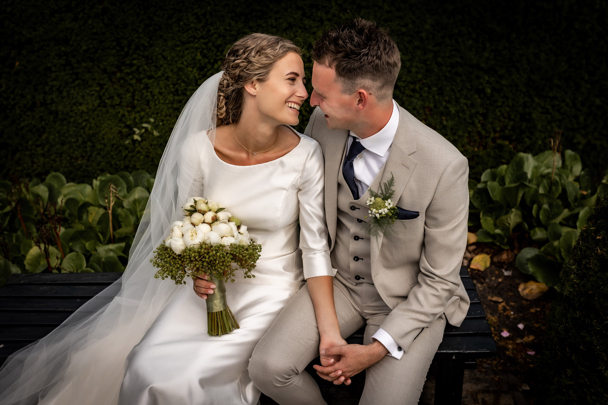
Bruidsreportage
“We hebben je niet opgemerkt!”
Voor mij het mooiste compliment. Op jullie bruiloft staan jullie in de schijnwerpers, ik werk op de achtergrond. Terwijl jullie van elkaar genieten, vang ik de emotie, het gebaar, de blik en de sfeer. Ongedwongen, kleurrijk en met veel natuurlijk licht.
Laat je trouwdatum achter, dan hoor je binnen 24 uur of ik beschikbaar ben.
Investering
- 8 uur, minimaal 300 bewerkte foto's
- € 2050
- 10 uur, minimaal 350 bewerkte foto's
- € 2250
- 12 uur, minimaal 400 bewerkte foto's
- € 2450
Altijd met kennismaking én voorbereidend gesprek, binnen enkele dagen een preview, je persoonlijke fotogalerij en een mini album van 15 x 15 cm. Inclusief reiskosten en btw.
-
1
Kennismaken
Eerst een afspraak, want het gevoel moet goed zijn. Zo kan ik ook een passende offerte voor jullie schrijven.
-
2
Het draaiboek
Een week vóór de grote dag nemen we samen het draaiboek nog eens door.
-
3
Sneak preview
De eerste beelden heb je binnen enkele werkdagen. De complete reportage volgt binnen zes weken.
-
4
Vereeuwigen
Een handgebonden trouwalbum, en jullie favoriete foto op dibond. Zo beleef je de dag telkens opnieuw.
Koppel, gezin of familie
Plezier staat voorop.
Geen statige opstelling, maar samen rennen, gekke opdrachten doen of gewoon even bij elkaar zijn. De blijdschap en verbondenheid die dan ontstaat, zie je terug op beeld. Voor elke leeftijd en samenstelling, en ook leuk om cadeau te geven.
- Koppel 2 personen, ca. 1 uur, 5 foto's in hoge resolutie € 295
- Gezin 3 tot 6 personen, ca. 1,5 uur, 10 foto's € 345
- Familie 7 tot 12 personen (tot 16 bij te boeken), ca. 1,5 uur, 15 foto's € 445
Steeds met kledingadvies en een persoonlijke fotogalerij, waar je extra foto's en afdrukken bestelt.
Boek een fotoshoot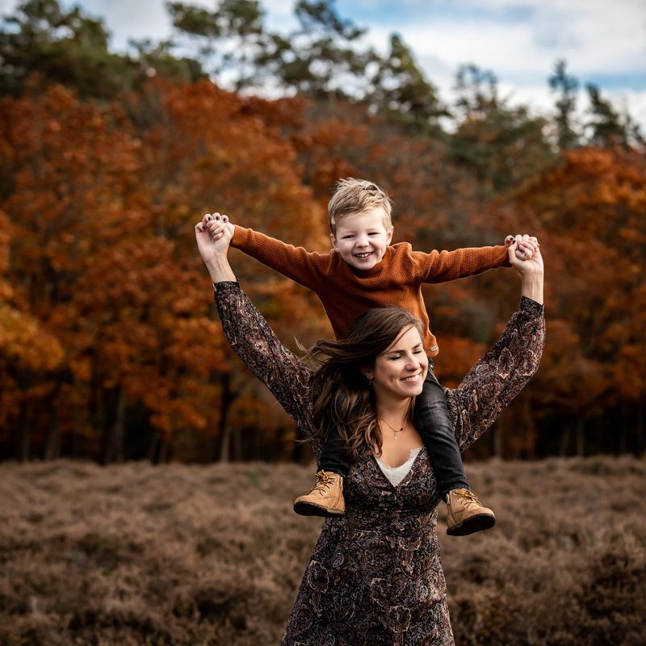
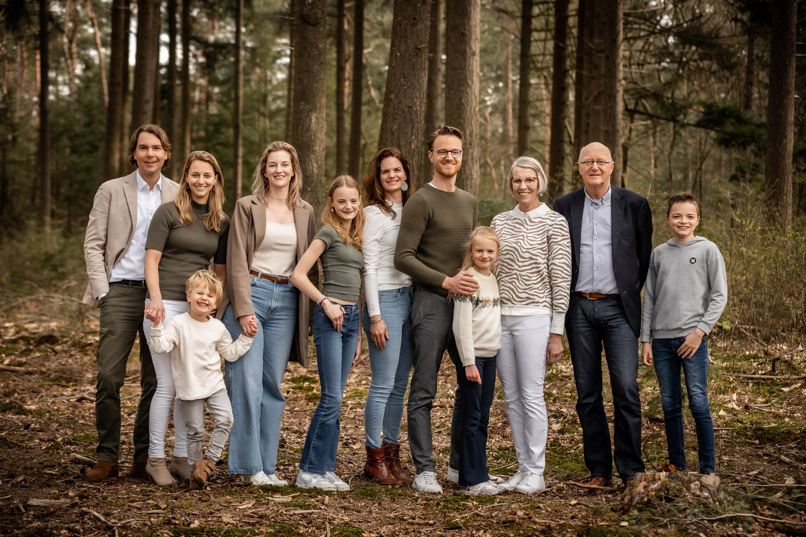
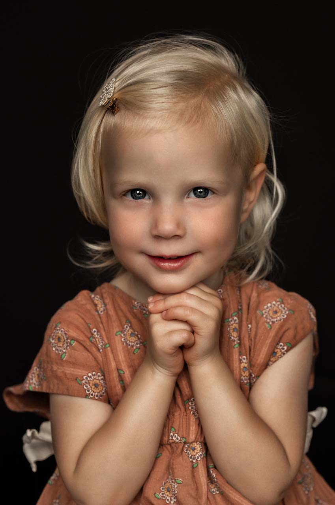
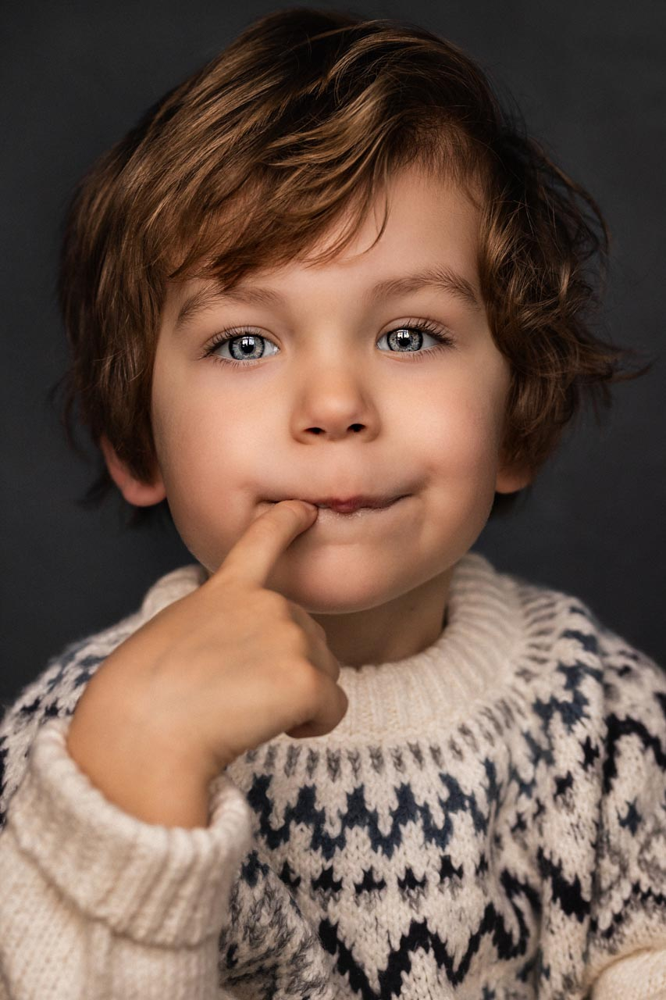
Portret
De twinkeling in de ogen.
Een portret vertelt zonder woorden een eigen verhaal. Met natuurlijk licht en zorgvuldige nabewerking wordt het persoonlijke kunst voor aan je muur.
Daarom zit bij iedere portretfotoshoot een luxe afdruk inbegrepen. Mijn klanten zijn er vaak even stil van. Voor jezelf, je partner, je kinderen of als cadeau.
Boek een portretfotoshootAan de muur.
Een greep uit bruiloften, families en portretten. Meer werk zie je op Instagram: @hannekebloemfotografie.
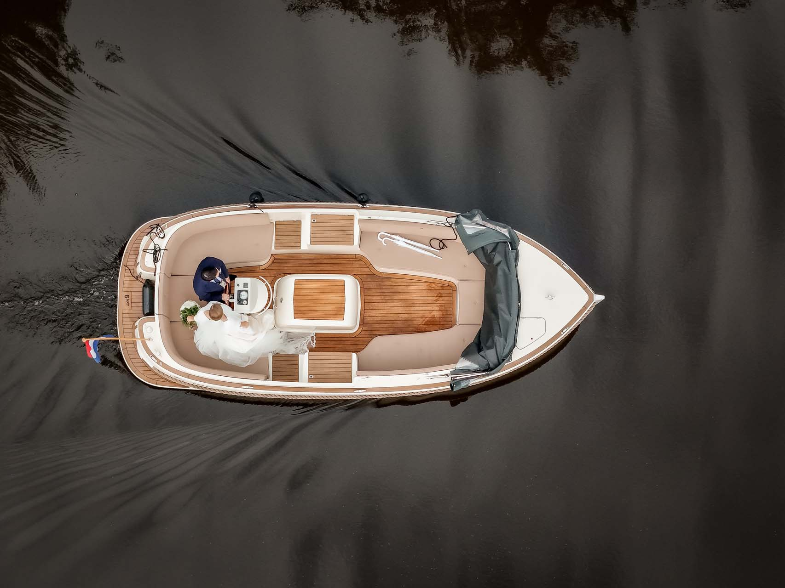
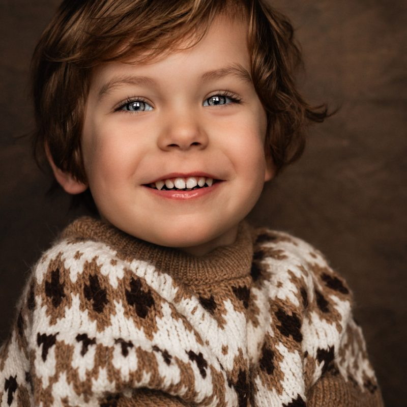
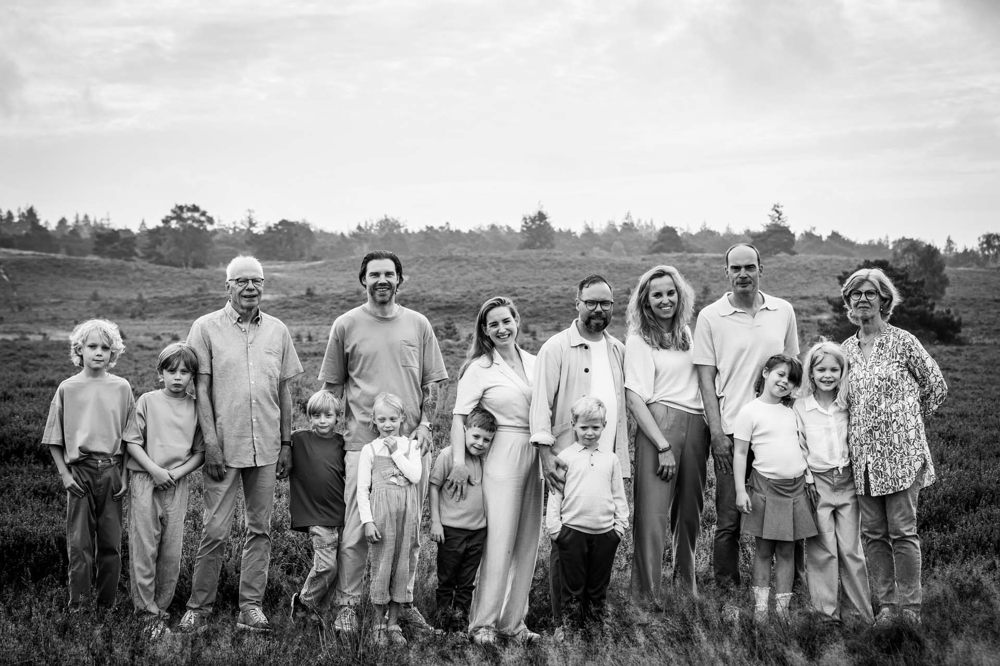
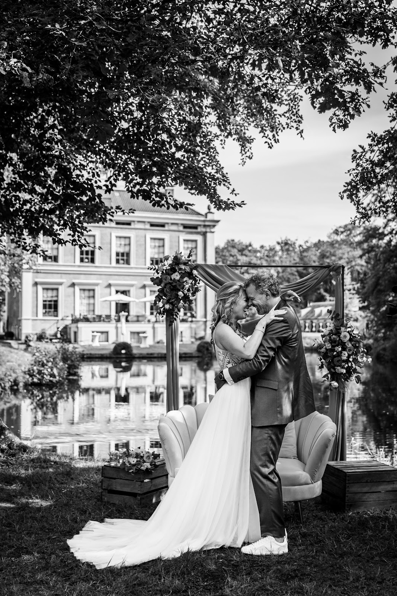
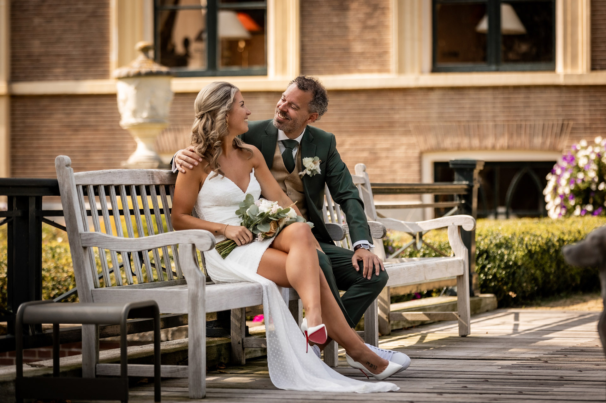
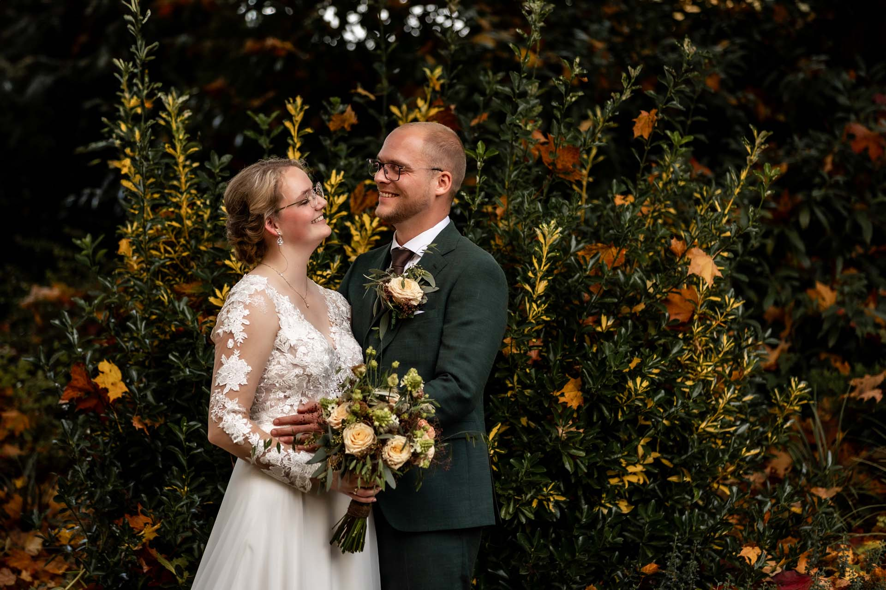
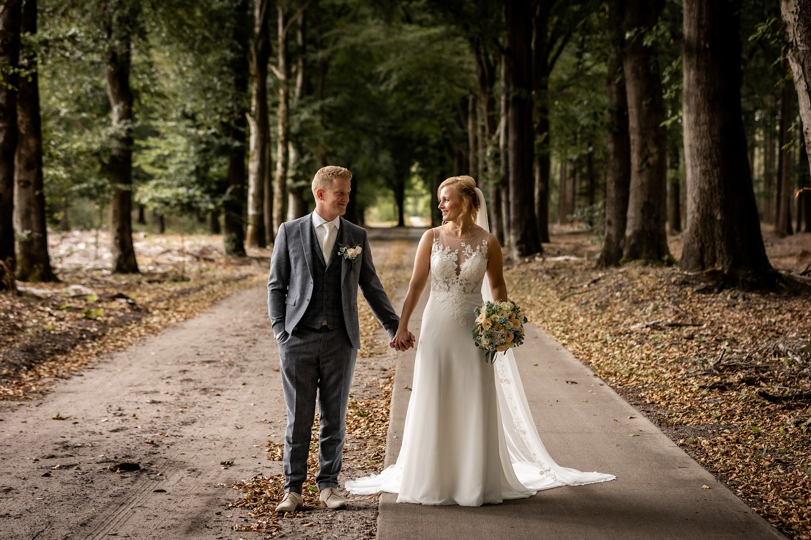
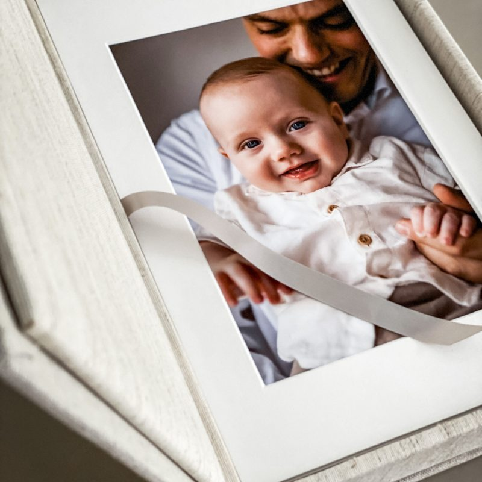
Afdrukken
Laat ze niet digitaal verstoffen.
Een foto op papier is een heel andere ervaring dan op een scherm. Alsof je teruggaat naar dat ene moment. Met een afdruk, een print in passe-partout, op dibond of in een album denk je veel vaker terug aan dat mooie, grappige of ontroerende moment.
En hoe fijn: afdrukken doe je ook gewoon bij mij.
Wat klanten zeggen.
4.9 uit 130 Google-reviews
“Hanneke is professioneel, kalm, gedreven en perfectionistisch. Ze luistert goed naar je wensen, is overal terwijl je haar niet ziet en weet de mooiste details vast te leggen.”
“Hanneke heeft onze bruiloft vastgelegd. En wat zijn we daar blij mee: ze heeft prachtige foto's gemaakt! Eigenlijk doet het woord 'foto's' geen recht, want ze heeft herinneringen/emoties vastgelegd. Het was ook heel fijn om haar er op de dag zelf bij te hebben. …”
“Leuke en gezellige fotoshoot gehad met onze familie. De door Hanneke voorgestelde locaties en uiteindelijke aanbeveling paste perfect. Ook de communicatie voorafgaand en naderhand was heel prettig. We zijn heel blij met de prachtige foto’s, de fijne sfeer tijdens de shoot en de snelle levering door Hanneke. Bedankt!”
“Hanneke heeft onze trouwdag prachtig in beeld gebracht. Ook het contact voorafgaand aan onze trouwdag hebben we als erg persoonlijk én professioneel ervaren. Ze nam er uitgebreid de tijd voor en dacht ook mee qua planning van de reportage. Op de dag zelf wist ze hele spontane momenten goed vast te leggen. …”
“Contact met Hanneke verliep per app en mail snel en informatie was duidelijk. Hanneke denkt in mogelijkheden en luistert goed naar de wensen. Geeft aan wat zij adviseert onderbouwde voors/tegens. De fotoshoot was verrassend leuk. …”
“Voor een speciale gelegenheid bij Hanneke een fotoshoot met het hele gezin en aanhang geboekt. Vooraf alles keurig afgestemd. Ook het tijdstip om zo optimaal gebruik te maken van natuurlijk licht. Tijdens de fotoshoot nam Hanneke heel natuurlijk het voortouw en stond open voor aanvullende ideeën. …”
Zullen we kennismaken?
Benieuwd of ik vrij ben op jullie datum, of heb je een andere vraag? Bel of app gerust. Ik denk graag met je mee.
06 51 41 14 91- Adres
- Hasselterdijk 35e, 8043 PD Zwolle
- Bereikbaar
- Maandag t/m zaterdag, 08:30 tot 21:00
- Zondag gesloten